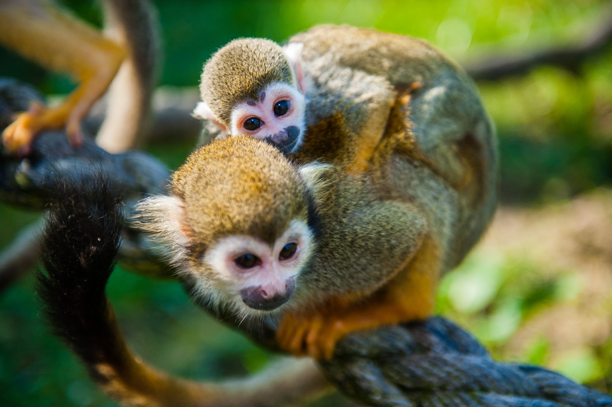

Common Squirrel Monkey
Common Squirrel Monkey's are native to South America, in countries like Brazil, Colombia, Peru and Venezuela.
They spend 99% of their time in trees, where they can move safely and freely and less likely to run into predators.
Primarily, Squirrel Monkey's eat fruits, seeds and nuts, but also emjoy small bugs and reptiles.
The average sized group of Squirrel Monkeys will be 50-500, however there have been reports of groups as big as 500 monkeys.
Deforestation is the single biggest threat to squirrel monkeys. They're losing their habitat to construction and forest fires,
pushing them out of the trees which makes them increasingly vulnerable to outside dangers. Another threat to these monkeys
are hunters and poachers, who use monkey parts in medicines, fashion accessories, some are even used for pets or show animals.
